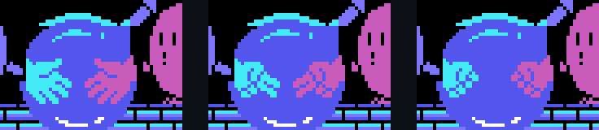
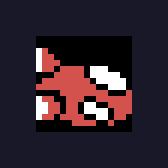

Each one says where it comes from: the code, a ROM table or a test in openMSX. The tests are in tools/pruebas/ and are told in In the emulator.
A stage is not cleared by finishing every cube but by having five finished in a row in a row, column or diagonal of the 9 × 9 grid (0x7421). One routine per frame, in turn, counts the rows (0x7330), the columns (0x7353) and both diagonals (0x7369, 0x737D), and on each four-frame round it counts one player's cubes: the mask of the and in the three-byte routine the game writes at 0xE4FD switches from 0x40 to 0x20.
The fourth check decides: one line is enough up to stage 30, two are needed from 31 to 40 and three from 41 to 50 (0x7391-0x73A6).
Tested in openMSX: with five cubes on row 4 of stage 1 marked as finished, the game moves to the stage-cleared step and pays the time.
0x72C0 is 24 rows of four bytes: the rotation each of the 24 turns into when jumped on in each of the four diagonals. They are the 24 rotations of a cube: every column is a permutation, and any rotation is reachable from any other in four jumps at most (measured walking the table; tests/test_juego.py checks it).
A cube is finished when its three visible faces match the model's (0x722F), so finishing one means planning the route of jumps.
In the duel, if time runs out with equal cubes, or if both fall, JAN-KEN-PON is played (0x89C6): LET'S PLAY JAN-KEN, each one picks with their joystick (down paper, left scissors, up rock, 0x8B2B) and the next hand beats the previous one: scissors beat paper, rock beats scissors, paper beats rock (0x8A89). Without a press, each gets one at random.
The right-hand hands are the left-hand ones mirrored: 0x8C5F copies 45 tiles from VRAM to VRAM reversing every byte.

0x9093 records the result of the last three jumps: 1 if it finished a cube, 0 if it rotated one without finishing it, 0x40 if it landed on one already finished. With three ones in a row, fewer than 8 lives and one player, an object appears once at Q\*bert's height and crosses from left to right one pixel per frame (0x8FDF), and touching it gives a life with the extra-life sound.
Tested in openMSX: with the streak set by hand, the object appears at Q\*bert's Y, crosses, and the lives go from 2 to 3.

In scene 7 row 7 of the keyboard is read: F5 sets the score to zero, three lives and goes back to the same stage (0x4396). F1 pauses and unpauses, but only while the stage tunes are playing (0x6AA3).
Tested in openMSX: the CONTINUE goes back to the game on stage 1 with two lives in reserve; the pause keeps the time still until the second F1.
After stages 3, 6 and 10 of every ten (0x79AE, on the units of the stage minus one) bit 0 of the mode turns on, the board at 0xA7AD is loaded and the game runs another step (0x789D): the screen is uncovered top to bottom, Q\*bert stays on each cube and the diagonals rotate it (0x7A37); when it is finished he moves on (0x7A47). At the end they are counted: every finished cube is covered with its points, 100 the first, 200 the second… and with all 27 comes PERFECT 5000 POINT.
Tested in openMSX: after stage 3 the bonus stage starts. The PERFECT comes from the code.
Objects 4 to 18 each come out in their own time (0x7444: every 64 frames their wait drops, and after coming out it goes back to 15) onto one of the two top cubes. What each one does is dispatched by 0x7628: the green ball freezes for 128 counts of four frames, the grey one makes everyone run away, the red one gives the long jump, the yellow one and the turtle change the speed, the blue one gives invincibility and the cube spinner gives 100 points. The eight that kill are the moai, the hooded one and the six coloured ones, which stick to cubes whose top face is their colour (0x750D). The hooded one heads for Q\*bert (0x7559), and if it lands on a spinning cube it falls and gives 1,000 points (0x6E99).
It comes from the code; the drawings, from the ROM.
0x7763 is ld hl,000BCh and then 0x6E2F writes to (hl) and (hl-2): 0x00BC and 0x00BA are the BIOS ROM and nothing happens. The same code with 0xE2BC would remove object 23. It is a reasoned assumption: the high byte was lost.
The last ten bytes: the title in katakana backwards (キューバート), its length, the 0x46 of RC-746 and 0xAA. Nobody reads them.